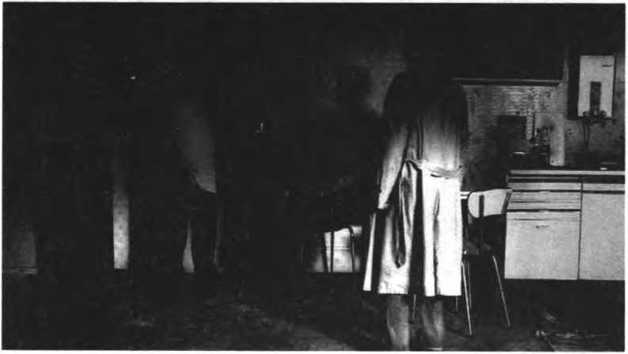

Biçemden İçeriğe Haneke Filmleri
Haneke filmlerinin biçemsel özelliklerini, Edward Said’in ‘Geç Dönem Üslubu’ kitabında Adorno ile ilgili söylediklerini dikkate alarak anlamaya çalışmak gerekir. Said, ister özgün Almancasından isterse de sayısız çevirisinden okunsun, Adorno okumanın ne kadar zor olduğunu ve Fredric Jameson’ın, “Adorno cümlelerindeki keskin zekâyı, eşsiz inceliği ve karmaşık bir sistematiğe sahip iç hareketleri, cümlelerin içeriğini kendi kelimeleriyle özetlemeye çalışanların bir, iki, üç derken hemen her girişiminin neredeyse rutin olarak sonuçsuz kalmasını çok güzel anlattığını” (Said, 2008: 33) söyler. Said, aynı kitabının başka bir yerinde, Adorno’nun Schönberg’i çözümlerken Lukács’a yaptığı atıflardan söz ederken, aslında Adorno’yu okumanın niçin zor olduğunu da anlatmış olur:
“Adorno, Schönberg’in on iki ton yöntemini neredeyse kelimesi kelimesine Lukács’ın özne-nesne açmazının dramından alınan terimlerle betimler; ama her sentez fırsatı doğduğunda; Adorno’nun Schönberg’i sentezi reddeder. Adorno’nun nefes kesici bir biçimde geriye yönelik bir kesit, Lukács’ın gittiği yolu sondan başa kat etmesini sağlayan bir son dönem prosedürü inşa ettiğini görürüz. Adorno, Schönberg’in aslında neyle ilgili olduğu konusundaki görüşleriyle, Lukács’ın kendini modern ümitsizliğin bataklığından kurtarmak için büyük uğraşlarla tasarladığı çözümleri en az onun kadar uğraşarak parçalara ayırır ve işe yaramaz kılar. Yeni müziğin ticari alanı mutlak olarak reddetmesine odaklanan Adorno’nun sözleri, sanatın altındaki toplumsal zemini kesip alır. Çünkü süsleme, yanılsama, uzlaşma, iletişim, hümanizm ve başarıyla savaşırken, sanatı savunmak imkânsız hale gelir.” (Said, 2008: 37)
Modern ümitsizliğin bataklığından; yarattığı hayal kırıklıklarından kurtulmak için Hegel’in bütünlükçü idealizmden feyz alınarak, değişik filozoflar eliyle inşa edilen düşünme biçimi Adorno’ya göre yeni değildir.2 Bu tam da sözü edilen modern ümitsizliğin bataklığına insanoğlunu iten rasyonel tahakkümün eseri olan düşünme biçimidir. Böyle olunca da bu düşünme biçiminin sızdığı sanat, rasyonel tahakkümü yeniden üretmekten başka bir işe yaramaz (Adorno ve Horkheimer, 2010: 54-58).
Haneke filmlerinde de biçemsel olarak bu işe yaramazlıktan sakınıldığı ve geleneksel film dilinin özellikleri ile inşa edilmiş gibi görünen akışın, Brechtyen dokunuşlarla sürekli bozulduğu görülür. Yönetmenin bir tür filmi (gerilim) parodisi olarak nitelendirdiği ‘Ölümcül Oyunlar’ (“Funny Games”, 1997), böyle bir filmdir. Çünkü Haneke’ye göre ‘Ölümcül Oyunlar’, heyecan dolu bir tür filmi gibi görünür ancak filmin ilerleyen sahnelerinde bu bozulur ve film kendi üzerine konuşur hale gelir (Akt. Wray, 2007: 2).3 Bir tür filmi parodisi olabilmesini sağlayan da filmin bu yönüdür. New York Times’lı eleştirmen John Wray’ı filmi izlerken rahatsız eden şey de filmin biçemi ile yakından ilgili olan bu ‘parodisel’ durumudur:
“Ölümcül Oyunların temel önermesi basittir: Sempatik, zengin, uyumlu bir aileyi yazlıklarında komşularının misafirleri olduğunu iddia eden iki iyi giyimli genç adam ziyaret eder. İlerleyen saatlerde bu iki kibar, konuşkan yabancı aileyi artan bir şekilde sadistleşen, zaman zaman doğrudan izleyici ile konuşma biçiminde film aksiyonunun dışına taşan tartışmalarına katılmaya zorlar. Bu, kenarda kalan dramatikleştirme tekniğinde yeni hiçbir şey yoktur. Brecht bundan faydalanmıştır. Shakespeare bütün oyunlarını bunun etrafında inşa etmiştir. Antik Yunan korosu başka bir amaca hizmet etmez, fakat film bilinen heyecan dolu klasik film akışının aksi bir biçimde son derece rahatsız edicidir. İki genç adam kurbanları ile açıkça dalga geçer; fakat bu aşağılamaların çoğu seyirci tarafından kabul edilir.” (2007: 2)4
“Ölümcül Oyunlar”, 1997
Bu kabullenmişlikte uzun yıllardır medyanın veri bombardımanına maruz kalmışlığın payı büyüktür. Haneke’nin sadece bu filme özgü olmayan rahatsız edici biçemsel tavrının hedefi de bu duyarsızlıktır. Seyircinin zamanının çoğunda karşı karşıya kaldığı ve alıştığı şiddet hali, geleneksel film diline sızar sızmaz seyirciyi şoka uğratır. Haneke’nin söylediği gibi kendi üzerine konuşan bu film (2007: 2) nedeniyle seyirci, kendi yaşamı ile yüzleşmek, onun hakkında düşünmek zorunda kalır. Bu yüzleşmenin biçemsel nedeni sadece karakterlerin kurbanlarını kendi eğlenceli oyunlarına dâhil etmeye çalışırken, kameraya dönerek seyirci ile konuşmaları değildir. Film başlar başlamaz, klasik ezgilerden ağır ‘rock’ tonlarına geçiş (Mozart’tan John Zorn’un sert punk müziğine geçiş); kurbanlarının yanı başında hiçbir şey yokmuş gibi, günlük alışkanlıklara atıfta bulunurcasına açık duran televizyon; hiç beklenmeyen biçimde patlayan tüfekten çıkan kurşunla evin küçük çocuğunun vuruluşu ve daha birçok kesit, geleneksel film akışına bir darbedir. Belki de bu darbenin asılı, buna dair ipuçları nedeniyle hep kurtulacağını zannettiğimiz kurbanların filmin sonuna kadar, sadece var olan oyunu iki genç adam için daha renkli kılmaktan başka bir şey yapamamalarıdır. Yönetmen bu kurgu sayesinde tıpkı Adorno’nun yaptığı gibi her uzlaşma fırsatı ortaya çıktığında onu ortadan kaldırır: Kurbanlar için her kurtuluş fırsatı, yeni bir oyuna dönüşür.
“Ölümcül Oyunlar”, 1997
Eleştirmen Christopher Sharrett’a göre yönetmenin Bergman, Resnais ve Antonioni gibi sanatçıların endişelerini, tıpkı daha önce bu tür sanatçıların ortaya attığı, onlarca tamamen cevaplanmış olsa bile, medya çağının daha karmaşık hale getirdiği soruların görmezden gelindiğini göstermek istercesine gündeme getiren (Sharrett, 2003: 2)5 ‘Bilinmeyen Kod’ (“Code Unknow”, 2000) adlı filmi de benzer, yabancılaştırıcı biçemsel özelliklerle bezelidir. Haneke’nin bu endişelere dikkat çekerken de tıpkı bu yönetmenler gibi davrandığı görülür. Örneğin geleneksel film biçimine ait, birbirine görünür bir biçimde, neden sonuç ilişkisi ile sıkı sıkıya bağlanmış sahneler ve sekanslar bu filmde yoktur. Sahneleri ve sekansları birbirine bağlayan bağlar görünmezdir ve eğer bu bağların görünür olması isteniyorsa filmin ana karakterlerinin bunu yapabilmesi için sabretmek ve filmi seyrederken oldukça dikkatli olmak gerekir. Çünkü asi bir gencin sokak başında dilenen bir kadına fırlattığı buruşturulmuş kese kâğıdı, sahneler ve sekanslarla parçalanan yabancılaşmış ilişkiler yumağını harekete geçirir. Bu küçük ayrıntının gözden kaçırılması durumunda ise filmi anlamak imkânsızlaşır. Filmi anlayabilmek, birbirine yabancılaşmış dünyaların birbirine ne kadar yakın olabileceğini görebilmek ve aslında, gerçekte rasyonel tahakkümün dayattığı bütünün yapaylığını kavramak ile ancak mümkün olabilir ve Haneke, bu yapaylığı gösterebilmek için sahneler ve sekanslar arasında, geleneksel film akışında sürekli kurulan yapay bütünü parçalara ayırır.
“Bilinmeyen Kod”, 2000
Geleneksel film diline ait bileşenlerin neredeyse hemen hepsi, Haneke elinde modern hayal kırıklıklarını yansıtan bir araç haline dönüşür. Schubert’in bestelerinin Isabelle Huppert ile birlikte başrolü oynadığı ‘Piyano Öğretmeni’ (“The Piano Teacher”, 2001), geleneksel film diline ait önemli bir bileşen olan müziğin, bu türden kullanımı için etkileyici bir örnektir. Aslında derin bir bilgi birikimini gerekli kılması bile tek başına müziklerin geleneksel işlevinin dışında kullanıldığını göstermesi açısından yeterlidir. Ancak müziğin geleneksel kullanımı ve bu kullanımın koşullandırdığı seyir alışkanlıkları, Schubert bestelerinin kullanım amacı konusunda seyredenleri ve hatta film kurdu eleştirmenleri dahi yanıltabilmektedir. Bu alışkanlıklar, seyredenleri ve eleştirmenleri, ana karakterlerin, sahnelerin ve sekansların duygu durumu ile müziğin akışı arasında bir ilişki kurmaya zorlayabilmektedir ki bunun gibi filmlerde müziğin yabancılaştırıcı bir ‘enstrüman’ olarak kullanıldığını görmeye de engeldir.
"Piyano Öğretmeni", 2001
Benzer bir alışkanlığın zorlamasıyla, bu filmde de ‘Die Win-terreisse’ındaki gezginin ruh durumu ile Profesör Erika’nın (Kohut) ruhsal durumu arasında bir ilişki kurulmaya çalışıldığı ve filmin zaman zaman bunu mümkün kıldığı görülür. Haneke’nin de söylediği gibi, Profesörün sahip olduğu gibi büyük problemlere sahip herhangi biri, onları Schubert’in sahip olduğu oldukça karmaşık hissiyata sahip başka bir sanatçı aracılığıyla yansıtabilir; fakat bunun ötesinde bir yorum yapmak bu film için mümkün değildir (Akt. Sharrett, 2003: 4).6 Çünkü ‘Piyano Öğretmeni’, artık baskılanamaz hale gelen doğal (insani) durumun ‘şizofrenik’ gelgitlerine dair bir filmdir ve ‘Die Winterreisse’ da bu gelgitleri yansıtabilme çabasının biçemsel bir bileşenidir: Orta sınıfı temsil eden bir karakter olarak Erika, aynı zamanda kendi varlığıyla uygarlığın yaşadığı huzursuzluğu görünür hale getirir ve uygarlığın geldiği bu aşama, orta sınıfın yaşam biçiminde onarılmaz kırılmalar meydana getirirken; modern besteci Schubert’in biçemi de bu kırılmalarla örtüşmektedir:
“... sözlerin derin ve saklı anlamlarını, ruhlara işleyen bir ifadeyle ortaya çıkararak kendinden sonraki besteciler üzerinde oldukça etkili olmuştur. Ani ton geçişleri, melankolik ezgileri, lirik anlatımı ve öznel yaklaşımıyla romantikler; oluşturduğu soyut atmosferlerle de özellikle empresyonistler için ciddi bir referans olmuştur... Schubert’in ezgileri, sürekli yapılan modülasyonlarla her defasında değişken tınılar içinde bir başkalaşım gösterir. Değişkenlik, beklenmeyen anlarda yapıldığı için dönemin geleneksel bestecileri tarafından sürekli eleştirilere maruz kalmıştır.” (Eren, 2014: 27)
Biçemsel özellikleri dikkate alındığında Haneke’nin filmlerini, ilk bakışta geleneksel ticari film (birinci sinema) yapımlarını andıran ancak sadece bu benzerlikten yararlanan filmler olarak nitelendirmek mümkündür. Ancak şu tespit de oldukça önemlidir: Haneke her filminde farklı yabancılaştırıcı özelliklerden yararlanır. ‘Ölümcül Oyunlar’ ile ‘Kurdun Günü’ (“Time of the Wolf”, 2003) ya da ‘Bilinmeyen Kod’ ile ‘Saklı’ (“Hidden”, 2005) arasındaki tek ortak nokta, bu filmlerin sözü edilen geleneksel film anlatısını kullanır gibi görünürken, bu yapıyı kırmaya çalışmalarıdır. Örneğin yönetmenin burjuva sınıfının dünyayı yönetme ya da düşünme biçiminin iflas edişini konu ettiği filmi ‘Kurdun Günü’, tür olarak sonu heyecanla beklenen bir felaket filmi gibi başlasa da, kısa bir süre sonra giderek can sıkıcı bir film haline gelir ki yönetmenin bunu uzun, durağan çekimler ve kısa diyaloglar ile sağladığı görülür. Film ilerledikçe filmin nasıl biteceği artık önemsizleşir. Bu nedenle seyircinin yapması gereken tek şey, oldukça az olan diyaloglar ile bezenen sahneleri çözümlemeye çaba sarf etmektir. Çünkü bu film de tıpkı öbürleri gibi asla alışık olunan biçimde bitmeyecektir.
“Saklı”, 2005
Benzer cümleler ‘Saklı’ için de kurulabilir. Bu film de ilk bakışta, bir gerilim filmi izlenimi yaratır. Kapıya bırakılan ya da işyerine yollanan her video-kaset, bu tür filmlere özgü öykülerde sonunda çözülmesi beklenen birer düğümdür. İyiyle kötünün kesin bir biçimde birbirinden ayrıldığı, filmde de ortaya çıkan rahatsız edici sapkınlıkların peşinen suçlandığı ve cezalandırılmasının beklendiği bu tür filmlerin aksine, atılan düğümlerle büyük bir tarihin tartışmaya açıldığı görülür. Her bir videokaset, Paul Eluard’ın ‘Acıların Başkenti’ dediği Paris’in kanlı geçmişine yapılan bir yolculuğa dönüşür. Sanatı, edebiyatı ve siyaseti günlük yaşamının vazgeçilmez bir parçası haline getirerek vicdanını rahatlatmaya çalışan entelektüel bir adamın (Georges) sahte burjuva dünyası, videonun yapay gerçekliği içinde altüst olur. Sıradan günlük yaşamın kayıt altına alınması, sadece bir adamın geçmişi ile hesaplaşması değildir. Kayıt altına alınan aynı zamanda o geçmiş ile kurulmuş bugünün modern dünyasının yapaylığıdır. Bu yüzden filmde çoğu zaman neyin gerçek neyin kayıt olduğu birbirine karışır. Videokaset ve bu kasetlerle yollanan resimler, geleneksel film dilinde akışın, heyecanla devamı için birer düğüm olarak kullanılıp, failin bulunmasına yönelik birer ipucu olarak görülebilecekken, bu filmde Haneke’nin söylediği gibi felsefi bir tartışmanın7 dayanağı haline gelir. Video kayıtları gibi tür filmlerine özgü geleneksel akışı bozan başka biçemsel bileşenleri de göz ardı etmemek gerekir. Rüyalar, videokasetlerin faili sanılan adamın (Majid’in) boğazını kesişi, Majid’in oğlunun Georges ile yaptığı ‘anlamsız/ sonuçsuz’ tartışma gibi daha birçok bileşen, geleneksel film akışını bozma girişimidir.

“Saklı”, 2005
Lukács’ın tarihsel roman ile ilgili övgüleri hemen herkesçe bilinir. Kuramcı, tarihsel roman ile neyi kastettiğini, ‘Tarihsel Roman’, ‘Çağdaş Gerçekçiliğin Anlamı’, ‘Avrupa Gerçekçiliği’ ve ‘Avrupa Edebiyatı ve Varoluşçuluk’ gibi kitaplarında örnekleriyle anlatır ve bu kitaplarda, tarihsel romana özgü iki temel özelliğin öne çıktığı görülür. Lukács, ‘bütünlük’ ve ‘tipiklik’ gibi kavramların tarihsel bir roman için vazgeçilmez bir çerçeve olduğuna ve Balzac, Flaubert, Zola, Tolstoy ve Stendhal gibi birçok romancının bu biçemsel zorunlulukları yerine getirme becerileri ile çağdaş romancılara örnek olabileceğine dikkat çeker. Bu, romanda üretim ilişkilerinin küçük bir evreninin yaratılarak, bu ilişkileri temsil eden karakterin kendi sınıfsal aidiyetleri ile birlikte resmedilebilmesidir. Lukács, çağdaş romanı, tarihsel romanın yolunu tutmayıp, modern dönemin yeni sanatsal yönelimlerinin etkisinde kalması nedeniyle de eleştirir. Çağdaş romanın, kimi örnekleri ile Lukács’ın övgüsünü almış olsa da tarihsel romana ait anlatım özelliklerinin artık miladını doldurduğu ve eleştirel yeteneğini yitirmiş olduğu için farklı anlatım yollarına başvurması anlaşılabilir bir tercihtir.8
“Beyaz Bant”, 2009
Sinemada da tarihsel romana özgü özellikleri içinde barındıran filmler görmek mümkündür9; ancak tıpkı çağdaş romancıların yaptığı gibi yeni anlatım olanakları peşine düşen örnekler daha çoktur. Ancak tarihsel romanın özelliklerini kullanırken, farklı tekniklerle bu romana ait anlatım akışını bozan yönetmen oldukça azdır ve Haneke bunlardan sadece biridir. Haneke, ‘Beyaz Bant’ (“The White Ribbon”, 2009) filminde kimi yabancılaştırıcı Brechtyen dokunuşlara başvurarak, tarihsel roman gibi görünen filmini, çeşitli insan yaşantılarının iç yüzüne doğru yöneltir. Birinci Dünya Savaşının hemen öncesinde küçük bir Alman kasabasında yaşananlar, Lukács’ın övdüğü tarihsel romanın bütünlük ve tipiklik özelliklerini de içinde barındıran garip bir öyküye dönüşür. Sınıfsal temsiller, iç dünyalarının karmaşıklığı ile sunulur. Anlatıcının yönlendirmelerinin, öykünün gidişatını anlamayı kolaylaştıracağı yerde zorlaştırması oldukça anlaşılmazdır. Sonunda ne anlatıldığı sorulduğunda, sıradan bir seyircinin ‘hiçbir şey’ demesinin oldukça olası olduğu bu filmde, geleneksel akışın işine yarayacak sıradışı birçok olay, ezeli ve ebedi değişmez insana özgü yaşantıları göstermeyi kolaylaştırmak için vardır. Bütün bunlar ile Haneke, Lukács’ın kendini modern ümitsizliğin bataklığından kurtarmak için büyük uğraşlarla tasarladığı çözüme uygun olduğu için övdüğü tarihsel roman bi-çemini, en az onun kadar uğraşarak parçalara ayırmakta ve işe yaramaz kılmaktadır.
Schubert’in başrolde olduğu bir başka Haneke filmi, Aşk’tır (“Amour”, 2012). Hatta filmde, sinemaseverlerin, Krzysztof Kieslowski’nin ‘Kırmızı’ (“Rouge”, 1994) filminden tanıdığı Fransız aktör Jean-Louis Trintignant’ın (Georges) ve Alain Resnais’ın ‘Hiroşima Sevgilim’ (“Hiroshima Mon Amour”, 1959) filminden tanıdığı Fransız aktris Emmanuelle Riva’nın (Anne) Schubert’e eşlik ettiği bile söylenebilir. ‘Aşk’, tıpkı gerçek yaşamdaki gibi gerçek ile gerçekçiliğin, düş ile anının birbiriyle pürüzsüzce kaynaştığı bir öyküye sahiptir ve bu yönüyle de seyirciye, ‘Impromptus’un hissettirdiğine benzer şeyler hissettirir.
‘Impromptus’, 19. yüzyılda hazırlıksız, doğaçlama ya da bir anda ortaya çıkmış izlenimi verecek şekilde bestelenen piyano parçaları için kullanılan bir kavramdır.10 Hazırlıksızlık, doğaçlama ve bir anda ortaya çıkış gibi kavramların, bütün hayatın rasyonel bir şekilde düzenlendiği Batı’nın herhangi bir başkentinde kabul edilmesi ise mümkün değildir. Filmin biçemini var eden de bu diyalektik karşıtlıktır. Haneke, Schubert’in 19. yüzyılda bestesiyle yaptığını, 21. yüzyılda filmiyle yapmaktadır. Modern yaşamın kabul edilemez olarak gördüğü şey, Haneke tarafından doğal ve kaçınılmaz bir son olarak gösterilir. Schubert’in rasyonel tonel düzenlemelerle hissettirmeye çalıştığı duygusal karmaşa ve insani belirsizliği, Haneke rasyonel gerekliliklere uygun neden sonuç ilişkileri ile örülmüş sahne ve sekanslarla hissettirmeye çalışır. Aşk gibi ölümün de, bütün rasyonel düzenlemelere rağmen var olduğunu söylemeye çalışırken, basit temsiller, iki kişilik bir yaşam ve küçük bir ev yeterli olur. Bu evde olan biten her şey; özellikle orta sınıfa ait yaşama biçimi, belirli bir düzen içinde, ağırbaşlı ve seviyeli ilişkiler içinde gösterilir.
“Aşk”, 2012
Örneğin Georges ve Anne arasındaki aşkta bu ağırbaşlılığın izlerini sürmek mümkündür. Hatta bu ağırbaşlı yaşam biçiminin aniden ortaya çıkan, beklenmeyen, hazırlıksız yakalanılan bir hastalık karşısında bile sürdürüldüğü görülür. Ancak orta sınıfın sürdürmeye çalıştığı rasyonel ve ağırbaşlı yaşam biçimi, hastalık ve ölüm karşısında çaresiz kalır. Çünkü rasyonel tasarılar ile gerçeklik arasında büyük bir fark vardır. Anne’in Georges’a, “tasarıların ve gerçekliğin nadiren birbiriyle örtüştüğünü” (“Amour”, 2012) söylemesinin nedeni de belki budur. Belki de bu yüzden tıpkı Impromptus’da olduğu gibi, bu filmin de geleneksel film akışına ait tek bir duygusal yönelimi yoktur. Yaşanan hayal kırıklıklarını yansıtan farkı duyguların, geleneksel film akışına ait neden sonuç ilişkisi içinde bir araya getirilmesi söz konusudur ki Schubert’in ‘Impromptus’ ile yaptığı da budur: Tek bir temanın olmayışı, birden fazla duygunun farklı fragmanlarla anlatılıyor ve sonucun, belirli bir duygusal yönelime izin vermiyor olması, filmi anlamak için de oldukça önemlidir ve film yakından incelendiğinde Haneke’nin de Schubert gibi şiirsel olan ile dramatik olanı bir araya getirebildiği görülür:
“Schubert’in Impromptus’u formların, anahtarların ve tempo göstergelerinin çeşitliliğine sahip olan geniş bir duygusal çeşitliliği dışa vurur... Schubert’in Impromptus’undaki konular, çarpıcı bir dizi duygu durumunu ve dramatik çağrışımı kapsar... Bununla birlikte Schubert’in ‘Impromptus’ ile değişik ses ve ifade biçimine yaptığı en önemli katkı, zamanının en etkileyici ve yaratıcı bestekârı olarak drama duygusu ile lirizmi pürüzsüz bir şekilde bir araya getirebildiği gerçeği olabilir.” (Uchino, 2007: 30, 31)
Haneke filmlerinin biçemsel yönelimleri ile ilgili söylenenler, filmlerin içeriklerinin incelenmesini de gerekli kılmaktadır. Çünkü biçemsel yönelimler, aslında neyin nasıl söylendiği ile ilgilidir. Haneke’nin ne söylemek istediğini, daha doğrusu filmlerin biçemsel yönelimleri incelenirken de zaman zaman değinmek zorunda kalınan modern hayal kırıklıkları ile söylediklerini, sosyal bilimler eliyle ve uzmanlık alanlarının sınırlarını zorlayarak anlamaya çalışmakta da yarar vardır ki ortaya çıkan sonuçlar, filmlerin biçemsel yönelimlerini daha iyi anlamayı kolaylaştırsın.